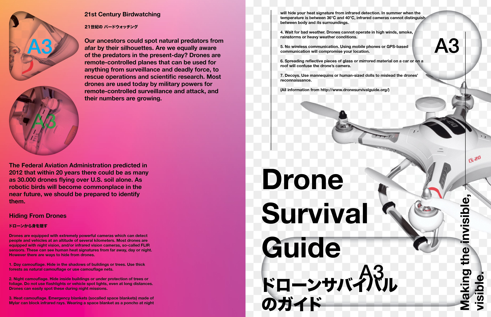
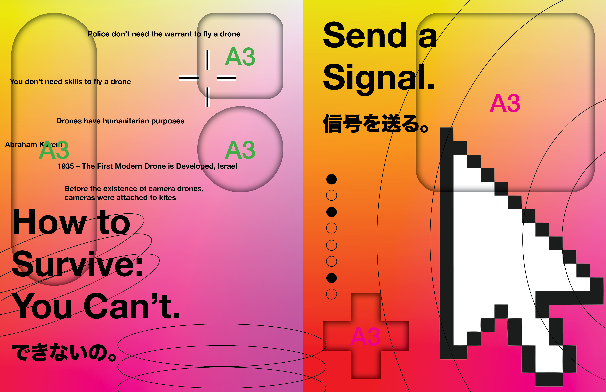
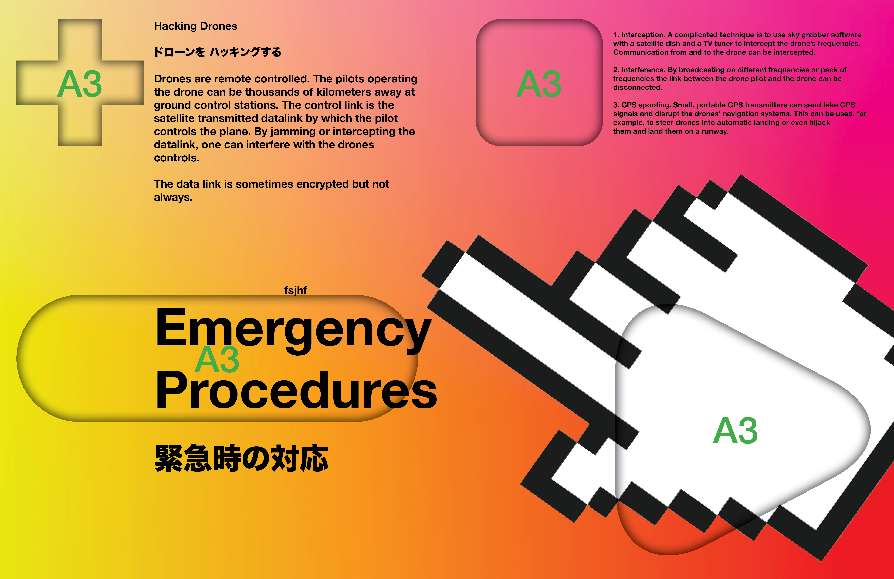
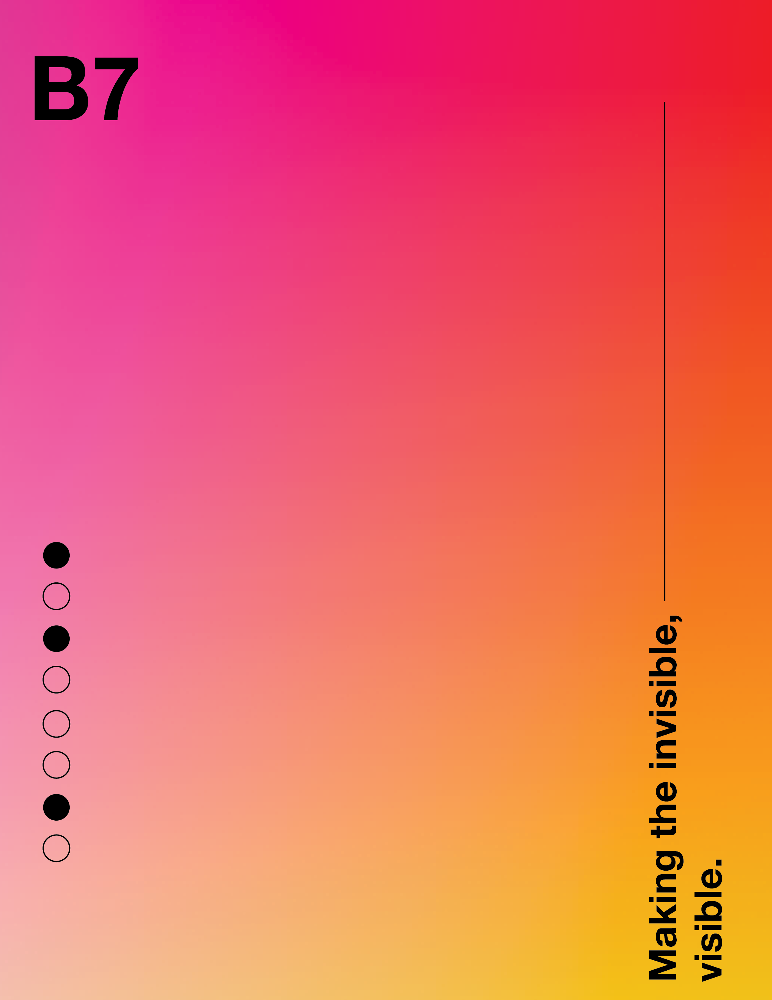

The hidden internet of things, wifi signals, how does airdrop work, how does tap to pay work, frequencies, airwaves.
Geographics B7
地理学
Hidden Internet
隠されたインターネット
Making the invisible, visible.
https://g-e-o.club/
GeoGraphics 地理学, printed on demand $35 (+ $20 shipping). Buy from Geo Club!
56pp, 215 mm x 279 mm, softcover.
  

1
2
3